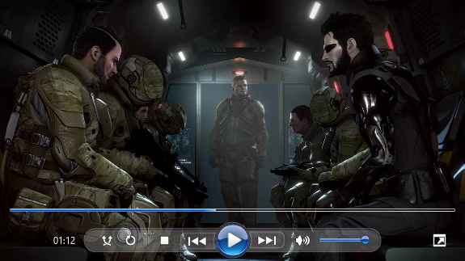
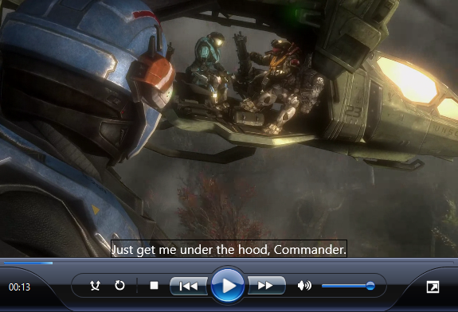

WMP-SVG is an attempt at recreating the graphics from Windows Media Player 11 and 12 using SVGs. WMP's original graphics were rasters, with SD and HD versions. The SVGs in this project were handwritten, using an image comparison slider (also handmade) to compare them with the rasters during editing and get them as close as I could.
A JavaScript-based custom element also exists for using the SVGs on a web page. The primary goal of this project was just the graphics, so the script only exists as a means to show them off. Try it out here. You can view the repo on GitHub.
Screenshots:
 